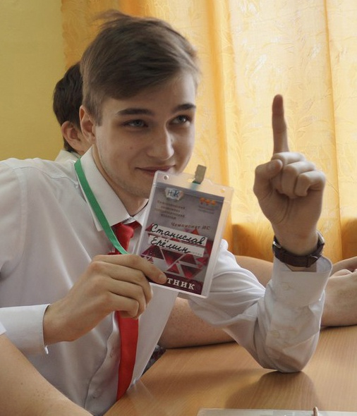
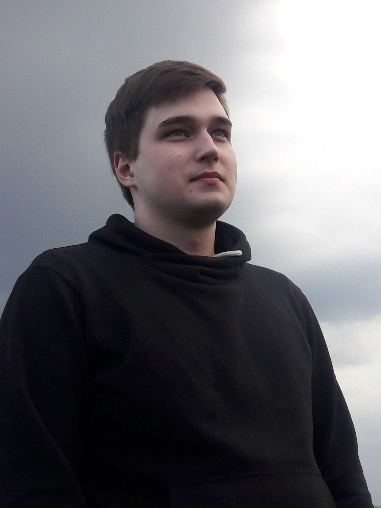
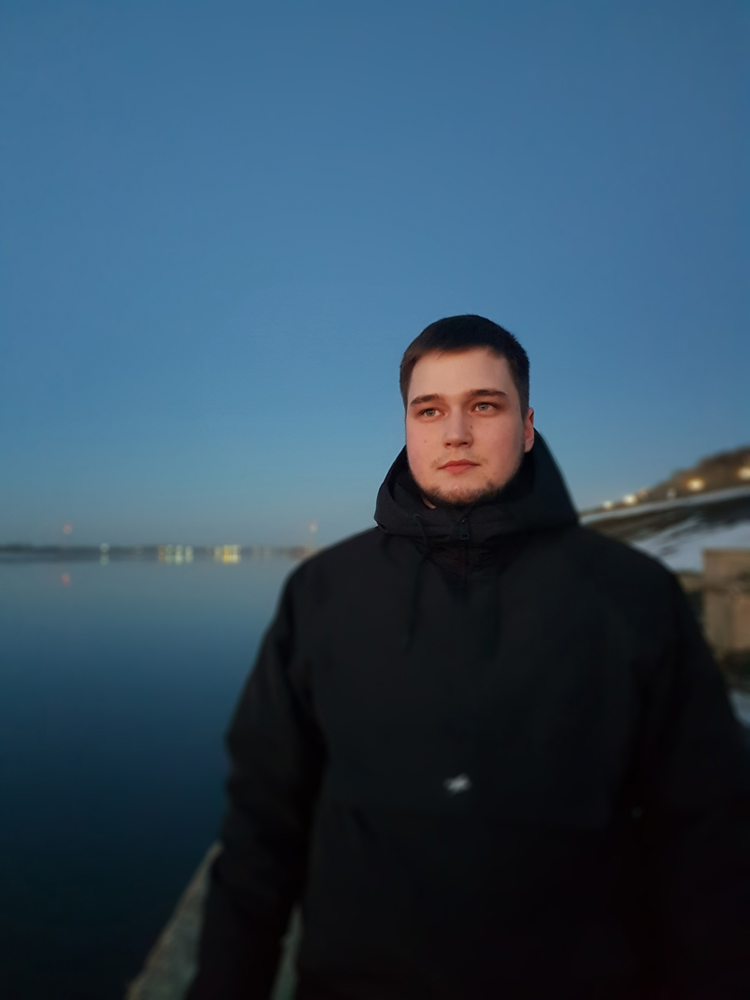
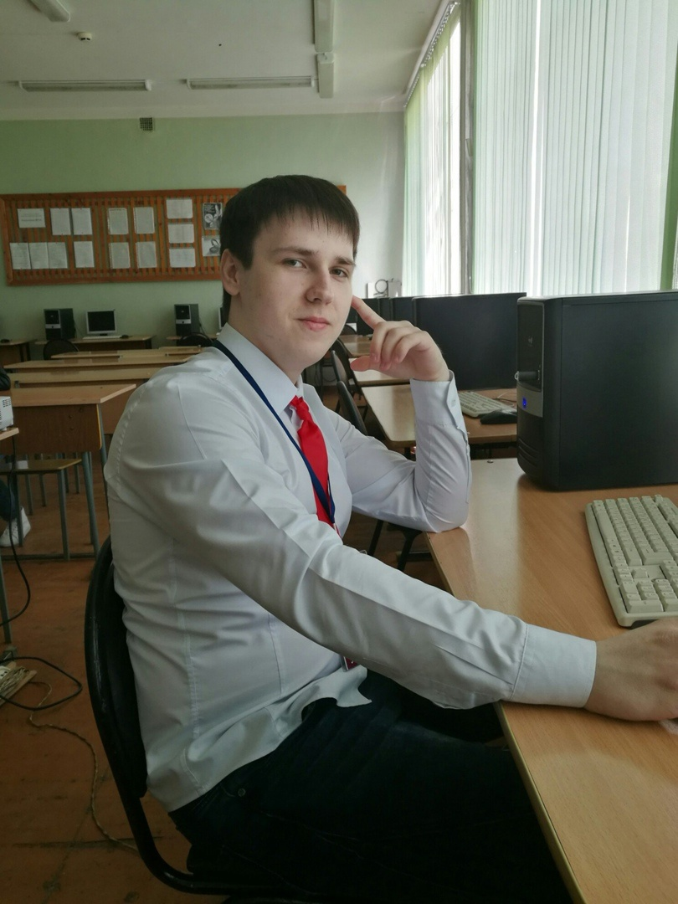
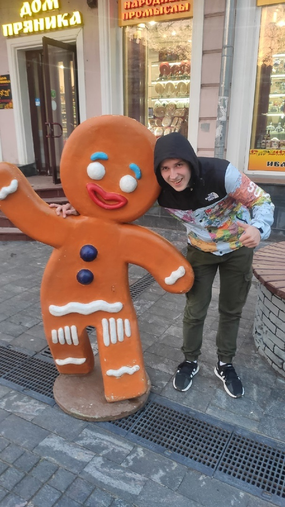

Выпускники 2019 года
Сегодня с нами: Станислав Ерёмин выпускник 2019 года. Во время учебы Станислав был очень активным участником Чемпионата профессий и предпринимательских идей, участником проектной группы VideoRoll специальности если вы хотите посмотреть на Стаса того времени загляните в раздел Видео нашей группы!!!
❗В годы учебы Станислав уже получал практический опыт в Сервисном Центре Герц, г. Арзамас
❗Сразу после колледжа, через неделю ушёл в армию, Ростов, был водителем и по совместительству техническая часть работы с ПК;
❗После армии переехал в Нижний Новгород, работал в сервисе по ремонту телефонов и техники;
❗Затем перешел в сервисный центр Apple, должность инженер;
❗ На сегодняшний день в компании RepairMyApple является управляющим несколькими филиалами;
❗Станислав говорит: что-бы раскрыть свои возможности, не надо бояться ответственности ведь , благодаря ей и своей уверенности, и знаниям можно добиться больших успехов.
Очень рады видеть!!!! Ждем в гости!!!!



И так это было не очень давно и мы помним этого человека. Выпускник 2019 года Клопов Артур. В годы учебы Артур был участником олимпиад и конкурсов по программированию и всегда защищал честь специальности #Информационные_системы, и всего Нижегородского экономико-технологического колледжа.
❗На сегодняшний день живет в Нижнем Новгороде.
❗Учится в Нижегородском государственном архитектурно-строительном университете, специальность "Программная инженерия", заочно.
❗Как и в годы учебы продолжает работать программистом по удаленке.
❗ Работает на аутсорсе с несколькими компаниями, такими как:
- The Ready Games (https://ready.gg/);
- Ready Maker;
- Eden Programming Solutions (https://edenprogram.com/), но компания выступает посредником, а проекты под NDA;
- A-Games (https://a-games.fun/), с которой работал в последнее время: две игры на мобильные платформы.
❗ Языки программирования которые использует в работе: основной c# и java для написания плагинов для андройда, а objective-c для плагинов на ios, Rust.

